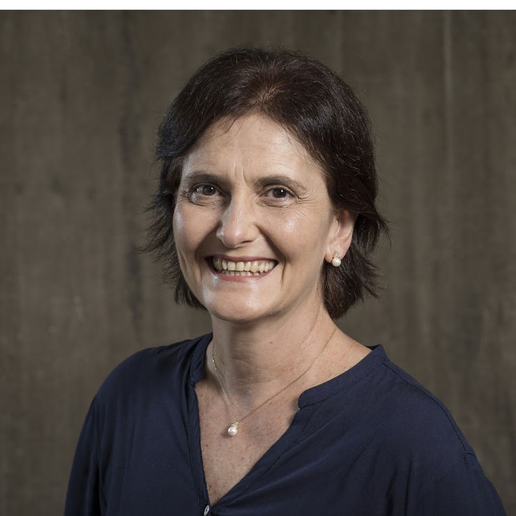
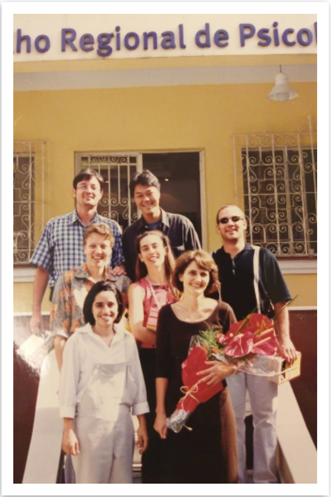

A História da ABRAPESP coincide com a construção das especialidades da Psicologia no Brasil. Katia Rubio
E a minha participação antecede a criação da associação.

Tudo começou na gestão de Lumena Furtado, no Conselho Regional de Psicologia de São Paulo, e seguiu pela gestão de Ana Bock, quando comissões de trabalho debatiam os assuntos daquele momento, como: a condição da homossexualidade como doença; especialidades; e questões emergentes da Psicologia de então.
Ligada ao Conselho Regional de Psicologia de SP, chamamos psicólogos interessados no tema Psicologia do Esporte. Na primeira reunião no auditório do CRP reunimos 30 pessoas. Entre 1998 e 1999, fizemos reuniões semanais. No terceiro encontro, aqueles que não se interessaram pela forma de trabalho que adotamos se afastaram. E psicólogos, psicólogas de diferentes perspectivas teóricas, estavam ali, o que indicava que a psicologia do esporte brasileira teria essa identidade múltipla do ponto de vista teórico, o que nos distinguia como área que tinha como marca: a psicanálise, a fenomenologia, o behaviorismo, a psicologia social.
O grupo era muito novo… imagina eu me formei em Psicologia em 1995, em 1997 entrei no mestrado e em 1999 entrei no doutorado … mas, o desejo de criação era muito grande e amadurecemos naquele ambiente onde o novo não parecia um problema. O CRP estava incentivando a produção de documentos dentro das Comissões que era uma forma de registrar tudo o que era feito. O material produzido pela Comissão de Esporte gerou um livro com produções individuais que se tornou uma referência para a Psicologia do Esporte, produzido pela editora Casa do Psicólogo. Nasceu assim o primeiro livro: Psicologia do Esporte: Interfaces, Pesquisa e Intervenção. Foi a primeira publicação de várias pessoas do grupo. Um marco, sem dúvida.
Para o lançamento do livro, foi promovido um evento de dois dias no Conselho Regional de Psicologia de São Paulo chamado Encontros e desencontros: descobrindo a psicologia do esporte. Estávamos em 2000, o evento foi um marco porque congregava todos os nomes da Psicologia do Esporte de então, psicólogas e não psicólogas. Convidamos, inclusive, aqueles que não nos aceitavam dentro da psicologia do esporte . Estavam ali Dante de Rose Junior; Benno Becker; Dietmar Samulski, Afonso Machado, Regina Brandão, Susi Fleury, destaques da área na época.
Paralelamente a isso, em Salvador, o Presidente do Conselho Regional de Psicologia da Bahia, Miguel Cal, um entusiasta da psicologia do esporte e com assento na plenária da Federal, trabalhou para a inclusão da Psicologia do Esporte como uma das especialidades a ser reconhecida pela resolução 014/00. Aprovada em dezembro de 2000, que informa:
RESOLUÇÃO CFP N.º 014/00 DE 20 DE DEZEMBRO DE 2000
Institui o título profissional de Especialista em Psicologia e dispõe sobre normas e procedimentos para seu registro.
.
.
.
Art. 2º – Caberá à Plenária do Conselho Regional de Psicologia, o recebimento e o exame dos documentos probatórios, assim como a aprovação da concessão do título de Especialista.
§ 1º – O Psicólogo dirigirá um requerimento ao Presidente do CRP onde tiver inscrição principal, instruído com cópias autenticadas de um dos seguintes documentos:
I- Certificado ou diploma conferido por instituição de ensino superior reconhecida pelo Ministério da Educação, desde que atenda a esta Resolução;
II- Certificado conferido por pessoas jurídicas ministrantes de cursos de especialização, desde que atendam a esta Resolução; (Redação dada pela Resolução nº 2/2001)
III- Documento de aprovação em concursos de provas e títulos prestado junto ao CFP ou entidade devidamente credenciada, para esta finalidade. (Redação dada pela Resolução nº 2/2001)
§ 2º – O CFP poderá delegar poderes para o credenciamento referido no parágrafo anterior.
§ 3º – O Conselho Regional de Psicologia, após a análise da documentação apresentada e constatada sua autenticidade, dará parecer conclusivo sobre a concessão do título de Psicólogo Especialista, no prazo máximo de 60 (sessenta) dias, contados a partir do recebimento comprovado em protocolo.
§ 4º – Após a concessão do título d Especialista, o Conselho Regional de Psicologia procederá ao devido registro, fazendo constar na Carteira de Identidade Profissional.
Art. 3º – As especialidades a serem concedidas são as seguintes:
– Psicologia Escolar / Educacional;
– Psicologia Organizacional e do Trabalho;
– Psicologia de Trânsito;
– Psicologia Jurídica;
– Psicologia do Esporte;
– Psicologia Hospitalar;
– Psicologia Clínica;
– Psicopedagogia; – Psicomotricidade.
Parágrafo único – Novas especialidades poderão ser regulamentadas, pelo CFP, sempre que sua produção teórica, técnica e institucionalização social assim as justifiquem.
.
.
.
Desde o início do debate, já havíamos criado, no Instituto Sedes Sapientiae, um curso de extensão em Psicologia do Esporte, com duração de seis meses. Com a aprovação da especialidade, fizemos um upgrade transformado-o em curso de especialização. Isso foi possível graças ao apoio da diretora de então Dodora Arantes. Aproveitamos então o evento de encerramento do curso em 2003 e a formação da primeira turma de especialistas para realizar um Simpósio no qual apresentamos aos presentes a proposta de criação da Associação Brasileira de Psicologia do Esporte. Assim nasceu a Abrapesp.

Estive na presidência em duas gestões. Na primeira com Eduardo de Cillo, de 2003 a 2005. Em seguida reconduzida à presidência tendo como vice-presidenta Marcia Pilla do Vale. Os anos iniciais de uma entidade, com o poder que a Abrapesp sempre teve, não foram fáceis, uma vez que estávamos organizando uma área até então com fronteiras ilimitadas e pouco respeitadas por profissionais não psicólogos. Mas com recursos dos psicólogos a Abrapesp cresceu e é a Associação que é, com a abrangência e reconhecimento que tem.
Minha postura de lutar e defender a Psicologia do Esporte como uma especialidade da psicologia e como um campo de intervenção específico de psicólogos trouxe muitos problemas para minha vida pessoal e profissional. Busquei então contribuir com aquilo que acredita ser fundamental para o avanço e consolidação de uma especialidade que nasceu sem mesmo estar na grade das graduações de Psicologia. E tinha convicção de que se formássemos bons profissionais e acumulássemos massa crítica a consolidação da área era uma questão de tempo. Então, em 1997 criei a Revista Brasileira de Psicologia do Esporte. Como toda revista, os primeiros números foram editados basicamente com contribuições de pesquisadoras e pesquisadores convidados e aos poucos a revista se firmou como a única publicação brasileira na área. Hoje a revista é A4 pelas avaliações da Capes e uma fila de aproximadamente 60 solicitações de aprovação e a editora responsável é a Profa. Gislane Melo, da Universidade Católica de Brasília.
Quando pensei no estatuto da ABRAPESP eu imaginava uma entidade onde os presidentes não pudessem ser espécies disfarçadas de ditadores. Por isso seria possível apenas uma reeleição para um mandato de 2 anos. Além disso, por uma questão de coerência, todos os presidentes devem ser psicólogos. Acredito que esse desejo seja cumprido, o que dará ainda mais força a uma associação que nasceu para fazer a Psicologia do Esporte ser de fato uma especialidade da Psicologia e não uma ponte para atividades que se dizem da psicologia.
Com o passar do tempo fui me distanciando da ABRAPESP para não ser uma eminência parda da entidade. Acreditei no poder de organização dos psicólogos e no meu íntimo entendia que se não fosse para ser assim, seria melhor que a associação deixasse de existir.
Ainda assim, fui a todos os congressos desde a fundação e continuo a colaborar como associada honorária.
Vida longa à Abrapesp!
Autora:
Profª Drª Katia Rubio Professora Associada Faculdade de Educação Departamento de Metodologia do Ensino e Educação Comparada Universidade de São Paulo
Telefone: 55.11.30913099 ou 11.991387466
http://lattes.cnpq.br/0941910739814664
ResearchID: C-6980-2018